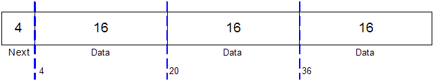
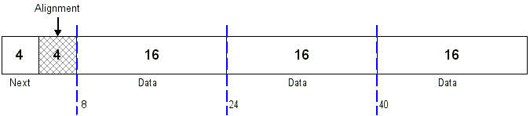
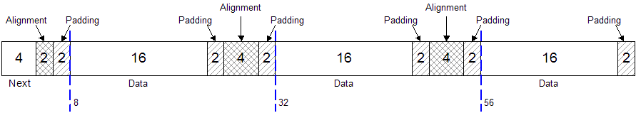
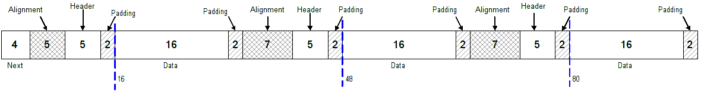
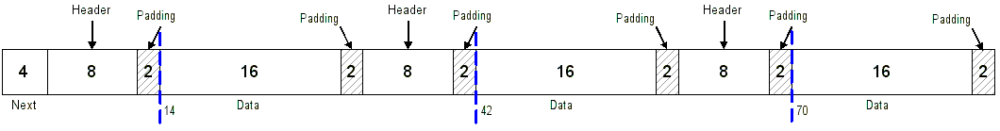
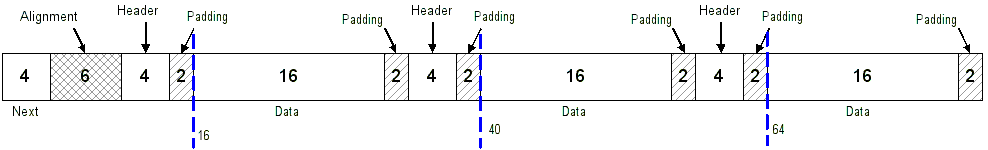
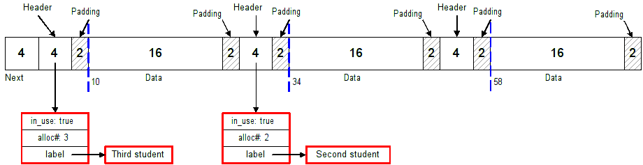

Phase 1: Object Allocator Diagrams (Handout)
These are the diagrams that were discussed in class and they assume a 32-bit computer (4-byte pointers):Phase 2: More Details (These examples assume a 32-bit computer)
PDF File of the diagrams below.Key to the signatures:
Signature Meaning/Use Owned by AA Unallocated ObjectAllocator BB Allocated Client/User CC Free ObjectAllocator DD Pad bytes ObjectAllocator EE Alignment bytes ObjectAllocator
To see what Real-Worldâ„¢ debuggers use, look here.
Key to the header blocks:
Type Meaning/Use Size (bytes) None No header blocks are present 0 Basic 4-byte allocation number, 1-byte flags 5 Extended Basic + 2-byte use count + user-defined bytes varies External Pointer to external data structure sizeof a pointer
Example 1: 16-byte data, no padding, no header blocks, no alignment, 3 objects per page.
Field Size Next pointer 4 bytes Padding 0 bytes (not used) Header block 0 bytes (not used) Data 16 bytes Alignment 0/0 bytes (not used) Page size 52 bytes 
Memory dump (wrapped at 32 bytes):
0 1 2 3 4 5 6 7 8 9 10 11 12 13 14 15 16 17 18 19 20 21 22 23 24 25 26 27 28 29 30 31 00 00 00 00 00 00 00 00 AA AA AA AA AA AA AA AA AA AA AA AA B4 3D 33 00 AA AA AA AA AA AA AA AA AA AA AA AA C4 3D 33 00 AA AA AA AA AA AA AA AA AA AA AA AAWrapped at 16 bytes:0 1 2 3 4 5 6 7 8 9 10 11 12 13 14 15 00 00 00 00 00 00 00 00 AA AA AA AA AA AA AA AA AA AA AA AA B4 3D 33 00 AA AA AA AA AA AA AA AA AA AA AA AA C4 3D 33 00 AA AA AA AA AA AA AA AA AA AA AA AANote: The data will naturally be aligned on 4-byte boundaries, due to the size of the data.
Example 2: 16-byte data, no padding, no header blocks, 8-byte alignment, 3 objects per page.
Field Size Next pointer 4 bytes Padding 0 bytes (not used) Header block 0 bytes (not used) Data 16 bytes Alignment 4/0 bytes (left/interblock) Page size 56 bytes 
Memory dump (wrapped at 32 bytes):
0 1 2 3 4 5 6 7 8 9 10 11 12 13 14 15 16 17 18 19 20 21 22 23 24 25 26 27 28 29 30 31 00 00 00 00 EE EE EE EE 00 00 00 00 AA AA AA AA AA AA AA AA AA AA AA AA B8 3D 33 00 AA AA AA AA AA AA AA AA AA AA AA AA C8 3D 33 00 AA AA AA AA AA AA AA AA AA AA AA AAWrapped at 16 bytes:0 1 2 3 4 5 6 7 8 9 10 11 12 13 14 15 00 00 00 00 EE EE EE EE 00 00 00 00 AA AA AA AA AA AA AA AA AA AA AA AA B8 3D 33 00 AA AA AA AA AA AA AA AA AA AA AA AA C8 3D 33 00 AA AA AA AA AA AA AA AA AA AA AA AANote: Only the first block of data has alignment bytes. This is to ensure that the first block is aligned on an 8-byte boundary. The remaining blocks have no need for extra alignment bytes because they are already aligned on 8-byte boundaries. This is why there are two alignment fields in the OAConfig class: LeftAlignSize and InterAlignSize.
Example 3: 16-byte data, 2-byte padding (left/right), no header blocks, 8-byte alignment, 3 objects per page.
Field Size Next pointer 4 bytes Padding 2 bytes Header block 0 bytes (not used) Data 16 bytes Alignment 2/4 bytes (left/interblock) Page size 74 bytes 
Memory dump (wrapped at 32 bytes):
0 1 2 3 4 5 6 7 8 9 10 11 12 13 14 15 16 17 18 19 20 21 22 23 24 25 26 27 28 29 30 31 00 00 00 00 EE EE DD DD 00 00 00 00 AA AA AA AA AA AA AA AA AA AA AA AA DD DD EE EE EE EE DD DD B8 3D 33 00 AA AA AA AA AA AA AA AA AA AA AA AA DD DD EE EE EE EE DD DD D0 3D 33 00 AA AA AA AA AA AA AA AA AA AA AA AA DD DDWrapped at 16 bytes:0 1 2 3 4 5 6 7 8 9 10 11 12 13 14 15 00 00 00 00 EE EE DD DD 00 00 00 00 AA AA AA AA AA AA AA AA AA AA AA AA DD DD EE EE EE EE DD DD B8 3D 33 00 AA AA AA AA AA AA AA AA AA AA AA AA DD DD EE EE EE EE DD DD D0 3D 33 00 AA AA AA AA AA AA AA AA AA AA AA AA DD DDNote: Both the LeftAlignSize and InterAlignSize values are non-zero. Also, each block has its own left and right pad bytes. The pad bytes are not shared between the blocks.
Example 4: 16-byte data, 2-byte padding (left/right), basic header blocks (5 bytes), 16-byte alignment, 3 objects per page.
Field Size Next pointer 4 bytes Padding 2 bytes Basic header block 5 bytes Data 16 bytes Alignment 5/7 bytes (left/interblock) Page size 98 bytes 
Memory dump (wrapped at 32 bytes):
0 1 2 3 4 5 6 7 8 9 10 11 12 13 14 15 16 17 18 19 20 21 22 23 24 25 26 27 28 29 30 31 00 00 00 00 EE EE EE EE EE 00 00 00 00 00 DD DD 00 00 00 00 AA AA AA AA AA AA AA AA AA AA AA AA DD DD EE EE EE EE EE EE EE 00 00 00 00 00 DD DD C0 3D 33 00 AA AA AA AA AA AA AA AA AA AA AA AA DD DD EE EE EE EE EE EE EE 00 00 00 00 00 DD DD E0 3D 33 00 AA AA AA AA AA AA AA AA AA AA AA AA DD DDWrapped at 16 bytes:0 1 2 3 4 5 6 7 8 9 10 11 12 13 14 15 00 00 00 00 EE EE EE EE EE 00 00 00 00 00 DD DD 00 00 00 00 AA AA AA AA AA AA AA AA AA AA AA AA DD DD EE EE EE EE EE EE EE 00 00 00 00 00 DD DD C0 3D 33 00 AA AA AA AA AA AA AA AA AA AA AA AA DD DD EE EE EE EE EE EE EE 00 00 00 00 00 DD DD E0 3D 33 00 AA AA AA AA AA AA AA AA AA AA AA AA DD DDNote: Pay attention to the order of the alignment bytes, header block, and pad bytes. They are in that order from left to right in front of the data. The alignment bytes must take the header block and pad bytes into consideration.Question: What is the size of the page? (Assumer 32-bit pointers)
Answer: It's the sum of all of the components. You are given all of the information in the constructor (via the configuration parameter) to calculate the page size.Note that you are not given the alignment block sizes directly. You are given an alignment value, which is the alignment requirements for each block. From that, you must calculate the left-alignment and inter-alignment sizes. All of these calculations are done with simple// next page pointer + left alignment block (only the first block has left alignment) PageSize = sizeof(void *) + LeftAlignSize; // 4 + 5 = 9 // Each object has a header, left padding, the object itself, right padding // (The left and right padding blocks are the same size) // 3 * (5 + 2 + 16 + 2) = 75 PageSize += ObjectsPerPage * (HeaderSize + LeftPadSize + ObjectSize + RightPadSize); // All but the first block have an inter-block alignment block PageSize += (ObjectsPerPage - 1) * InterAlignSize; // (3 - 1) * 7 = 14matharithmetic as shown above.
Example 5: 16-byte data, 2-byte padding (left/right), extended header blocks with 1 additional byte (8 bytes), no alignment.
Field Size Next pointer 4 bytes Padding 2 bytes Extended header block 8 bytes Data 16 bytes Alignment 0/0 no alignment Page size 88 bytes 
Memory dump (wrapped at 32 bytes):
0 1 2 3 4 5 6 7 8 9 10 11 12 13 14 15 16 17 18 19 20 21 22 23 24 25 26 27 28 29 30 31 00 00 00 00 00 00 00 00 00 00 00 00 DD DD 00 00 00 00 AA AA AA AA AA AA AA AA AA AA AA AA DD DD 00 00 00 00 00 00 00 00 DD DD 8E 4D 33 00 AA AA AA AA AA AA AA AA AA AA AA AA DD DD 00 00 00 00 00 00 00 00 DD DD AA 4D 33 00 AA AA AA AA AA AA AA AA AA AA AA AA DD DDWrapped at 16 bytes:0 1 2 3 4 5 6 7 8 9 10 11 12 13 14 15 00 00 00 00 00 00 00 00 00 00 00 00 DD DD 00 00 00 00 AA AA AA AA AA AA AA AA AA AA AA AA DD DD 00 00 00 00 00 00 00 00 DD DD 8E 4D 33 00 AA AA AA AA AA AA AA AA AA AA AA AA DD DD 00 00 00 00 00 00 00 00 DD DD AA 4D 33 00 AA AA AA AA AA AA AA AA AA AA AA AA DD DD
Example 6: 16-byte data, 2-byte padding (left/right), external header blocks (4 bytes, 32-bit), 8-byte alignment.
Field Size Next pointer 4 bytes Padding 2 bytes External header block 4 bytes Data 16 bytes Alignment 6/0 alignment Page size 82 bytes 
Memory dump (wrapped at 32 bytes):
0 1 2 3 4 5 6 7 8 9 10 11 12 13 14 15 16 17 18 19 20 21 22 23 24 25 26 27 28 29 30 31 00 00 00 00 EE EE EE EE EE EE 00 00 00 00 DD DD 00 00 00 00 AA AA AA AA AA AA AA AA AA AA AA AA DD DD 00 00 00 00 DD DD 90 4D 33 00 AA AA AA AA AA AA AA AA AA AA AA AA DD DD 00 00 00 00 DD DD A8 4D 33 00 AA AA AA AA AA AA AA AA AA AA AA AA DD DDWrapped at 16 bytes:0 1 2 3 4 5 6 7 8 9 10 11 12 13 14 15 00 00 00 00 EE EE EE EE EE EE 00 00 00 00 DD DD 00 00 00 00 AA AA AA AA AA AA AA AA AA AA AA AA DD DD 00 00 00 00 DD DD 90 4D 33 00 AA AA AA AA AA AA AA AA AA AA AA AA DD DD 00 00 00 00 DD DD A8 4D 33 00 AA AA AA AA AA AA AA AA AA AA AA AA DD DD
Example 7: 16-byte data, 2-byte padding (left/right), external header blocks (4 bytes, 32-bit), no alignment.
This example shows the dynamically-allocated structs and dynamically-allocated strings as well.
Field Size Next pointer 4 bytes Padding 2 bytes External header block 4 bytes Data 16 bytes Alignment no alignment Page size 76 bytes 
Memory dump (wrapped at 32 bytes):
0 1 2 3 4 5 6 7 8 9 10 11 12 13 14 15 16 17 18 19 20 21 22 23 24 25 26 27 28 29 30 31 00 00 00 00 40 4E 33 00 DD DD BB BB BB BB BB BB BB BB BB BB BB BB BB BB BB BB DD DD B8 4E 33 00 DD DD BB BB BB BB BB BB BB BB BB BB BB BB BB BB BB BB DD DD 00 00 00 00 DD DD CC CC CC CC CC CC CC CC CC CC CC CC CC CC CC CC DD DDWrapped at 16 bytes:0 1 2 3 4 5 6 7 8 9 10 11 12 13 14 15 00 00 00 00 40 4E 33 00 DD DD BB BB BB BB BB BB BB BB BB BB BB BB BB BB BB BB DD DD B8 4E 33 00 DD DD BB BB BB BB BB BB BB BB BB BB BB BB BB BB BB BB DD DD 00 00 00 00 DD DD CC CC CC CC CC CC CC CC CC CC CC CC CC CC CC CC DD DDThe diagram above is the result of allocating all 3 blocks, then freeing the right-most block. The signatures reflect this fact.Note: The structs and the strings (labels) are dynamically allocated with new. Do not try and use your ObjectAllocator to manage that memory.
Click to open VirusTotal report